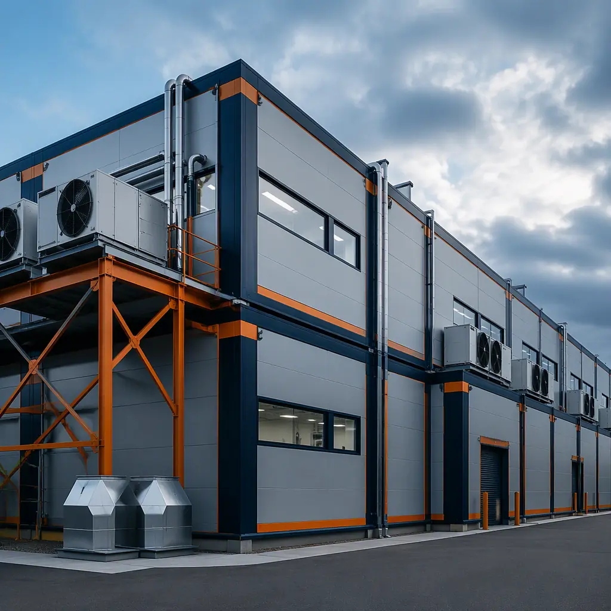
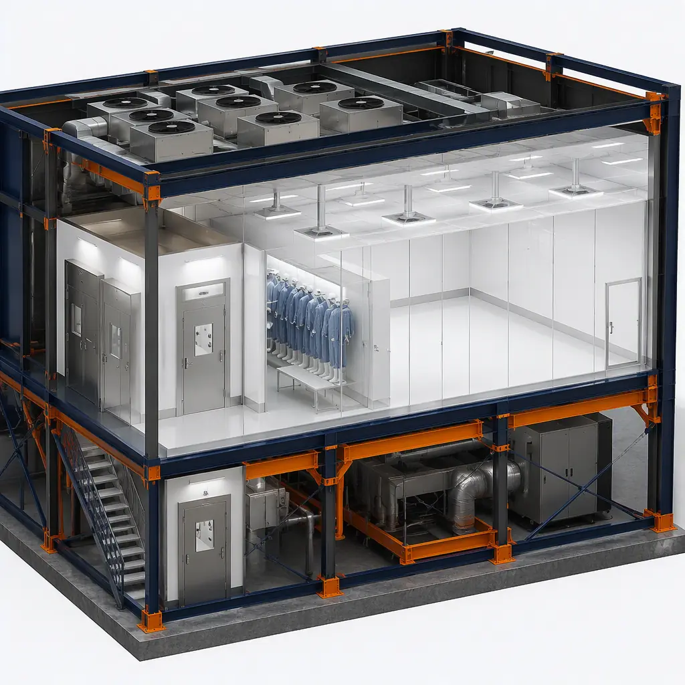
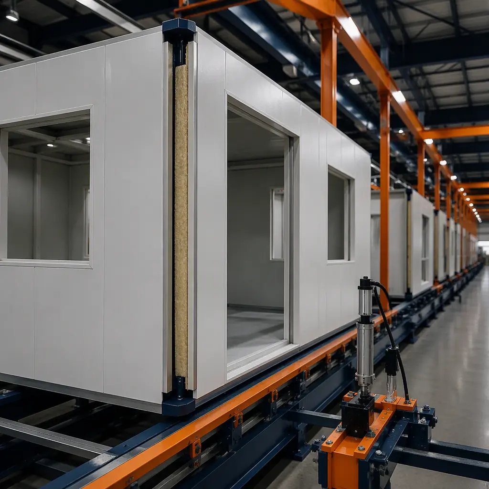
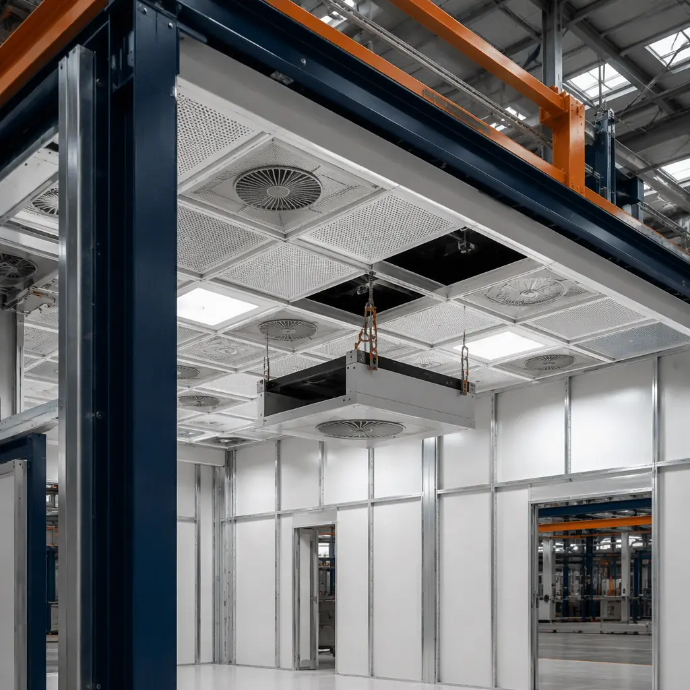

The CHIPS and Science Act has authorized $52.7 billion in US semiconductor manufacturing investments, triggering the largest fab construction wave in American history. Simultaneously, the global pharmaceutical clean room market is projected to reach $8.2 billion by 2028 (MarketsandMarkets), driven by biologics manufacturing, cell and gene therapy production, and sterile injectable capacity expansion. These two industries share a common construction bottleneck: clean room certification. Field-built clean rooms routinely fail their initial ISO 14644-1 particle count certification, requiring $50,000–$200,000 in remediation, re-cleaning, and re-testing that delays facility commissioning by 3–6 weeks. And when a semiconductor fab expansion takes 18–24 months using traditional stick-built methods, every month of delay represents $40 million or more in lost product revenue at current leading-edge wafer pricing. Modular clean room construction addresses both problems simultaneously: modules are factory-built to ISO specification under controlled conditions, pre-certified before shipping, and delivered ready for final utility connection and commissioning — compressing the overall facility timeline by 50% and eliminating the certification-failure risk that plagues field-built clean rooms. For related high-tech facility construction approaches, see our analysis of modular lab construction and our guide to modular data center construction.

Why Field-Built Clean Rooms Fail Certification — And What It Costs
ISO 14644-1 defines clean room classification by maximum allowable particle counts per cubic meter of air. At ISO Class 5 (equivalent to the legacy Federal Standard 209E Class 100), the limit is 3,520 particles/m³ at ≥0.5 µm and 29 particles/m³ at ≥5.0 µm. ISO Class 7 (Class 10,000) permits 352,000 particles/m³ at ≥0.5 µm, and ISO Class 8 (Class 100,000) permits 3,520,000 particles/m³. These are extraordinarily low concentrations — a typical urban outdoor environment contains 35,000,000+ particles/m³ — and achieving them requires a construction environment that is itself nearly clean-room-grade during the final stages of interior finishing. Field construction sites are the opposite of this: drywall sanding generates clouds of calcium sulfate dust that infiltrate interstitial wall cavities, silicone and epoxy sealants outgas volatile organic compounds that deposit on surfaces as sub-micron particles, and construction debris — concrete dust, metal shavings, insulation fibers — accumulates in ductwork and plenum spaces that will later distribute HEPA-filtered air through the facility. The result is predictable: approximately 30–40% of field-built clean rooms fail their first ISO certification test, according to clean room commissioning data from NEBB-certified testing agencies.
The remediation cycle following a failed certification is both expensive and schedule-disruptive. The clean room must undergo a multi-pass deep cleaning protocol: HEPA-vacuuming of all surfaces including ceiling grid, wall panels, and raised floor tiles; wet-wiping of all surfaces with USP-grade isopropyl alcohol and lint-free wipes; replacement of all HEPA/ULPA filters that may have been contaminated during construction; re-balancing of the HVAC air handling system to restore design air changes per hour (typically 300–600 ACH for ISO 5 spaces); and re-testing by the third-party certification agency. This process takes 3–6 weeks and costs $50,000–$200,000 in direct expenses (cleaning contractor labor, replacement filters, re-testing fees, certification agency charges) plus the opportunity cost of delayed production startup. For a semiconductor fab where each day of delayed production represents millions in unrealized revenue, the indirect costs dwarf the direct remediation expense. For more on how factory-controlled environments eliminate construction contamination, see our detailed analysis of factory QC systems.
How Modular Clean Rooms Eliminate Certification Risk
Modular clean rooms invert the construction sequence that causes field contamination. Instead of building the clean room envelope, installing mechanical systems, and then attempting to clean the space to ISO particle limits after the fact, modular clean rooms are built in a factory that is itself a controlled environment. The factory floor operates at ISO 8-equivalent cleanliness during module assembly, meaning the modules are never exposed to the construction dust, airborne debris, and uncontrolled humidity that characterize field construction sites.
The module envelope consists of a welded structural steel frame with non-shedding interior wall panels — typically fiberglass-reinforced plastic (FRP), 304 or 316L stainless steel, or epoxy-coated aluminum honeycomb panels — selected for the clean room's chemical compatibility requirements (semiconductor fabs using aggressive cleaning chemistries require stainless or epoxy-coated surfaces; pharma GMP spaces typically use FRP or smooth-finish epoxy coatings). The fan filter unit (FFU) ceiling grid is factory-installed with HEPA (99.97% efficient at 0.3 µm) or ULPA (99.9995% efficient at 0.12 µm) filters pre-mounted and pre-sealed at the factory-to-filter interface. The raised access floor system — typically a 600 mm × 600 mm panel grid on adjustable pedestals at 300–600 mm finished floor height — is pre-installed with factory-verified floor panel flatness of ±0.5 mm across any 2-meter span, critical for vibration-sensitive semiconductor lithography and metrology equipment.

The critical advantage is pre-certification. Before a module leaves the factory, it undergoes ISO 14644-1 particle count testing at the specified clean room classification and operational state. Particle counters sampling at multiple locations within the module verify that particle concentrations are within limits at rest (no personnel present, equipment installed and operating). Any non-compliance is corrected in the factory — filter seals are re-checked, surfaces are re-cleaned, and air change rates are verified — before the module ships. The on-site work is limited to module placement and alignment, gasket sealing at module-to-module joints, utility connection (process cooling water, bulk gases, exhaust ductwork, electrical busway), and final at-rest certification testing, which typically passes on the first attempt because the modules were already verified clean before transport. For modular projects that require integration with complex MEP systems, see our BIM-to-factory digital workflow guide.
Cost Comparison — Modular vs Traditional Clean Room Construction
Clean room construction costs vary substantially by ISO classification, process utility requirements, and geographic labor rates. The following comparison uses US Gulf Coast and Southwest labor rates (2026 Q3) for a prototype semiconductor assembly and test facility and pharmaceutical production suite, with costs presented as all-in turnkey pricing including general conditions, overhead, and profit.
| Clean Room Component | Conventional ($/sq ft) | Modular ($/sq ft) | Savings |
|---|---|---|---|
| ISO 5 (Class 100) fab space (5,000 sq ft) | 1,200–1,800 | 900–1,300 | −25–28% |
| ISO 7 (Class 10,000) assembly (10,000 sq ft) | 600–900 | 440–620 | −27–31% |
| ISO 8 (Class 100,000) packaging (10,000 sq ft) | 350–500 | 250–340 | −29–32% |
| MEP & process utilities | 200–350 | 150–240 | −25–31% |
| Certification & commissioning | 80–150 | 30–50 | −63–67% |
The certification and commissioning line item alone — where modular delivers 63–67% savings by eliminating the remediation cycle — represents a $50,000–$100,000 direct cost reduction that justifies the modular construction evaluation regardless of other line-item comparisons. For a comprehensive discussion of modular construction cost drivers across all building types, see our 2026 modular construction pricing guide.

CHIPS Act and the Speed Imperative
The CHIPS Act funding structure creates a temporal constraint that makes construction speed a strategic variable, not just a cost consideration. Under the Department of Commerce's CHIPS Incentives Program, awarded funding recipients must demonstrate that construction will commence within 12 months of the award agreement — a timeline that conventional clean room construction methods struggle to meet, particularly for fab expansions requiring coordination with ongoing production operations. The modular approach compresses the total facility timeline from 18–24 months to 9–12 months through parallel construction: the building shell, foundation, and site utilities proceed on site while the clean room modules are simultaneously fabricated in the factory. When the shell is weathertight and utility stubs are in place, modules arrive on flatbed trucks ready for craned placement, gasket sealing, and utility connection — a 4–8 week on-site installation window versus 12–18 months for field-built clean room interiors.
The financial stakes of this timeline compression are quantified in semiconductor industry economics. A leading-edge logic fab producing 300 mm wafers at 5 nm or 3 nm nodes generates approximately $500 million or more in annual product revenue. Each month of construction schedule acceleration brings online production capacity one month earlier, representing roughly $40 million in incremental product revenue at full fab output. For a 50,000 sq ft fab expansion — a typical module size for a new process tool installation or a back-end packaging line expansion — converting from an 18-month field-built timeline to a 9-month modular timeline captures 9 months of accelerated production, a revenue acceleration opportunity of $360 million for a single leading-edge fab line. Even at mature-node facilities (28 nm and above), where annual revenue per fab is lower but still in the $200–$400 million range, the modular timeline advantage delivers $75–$150 million in accelerated production revenue. For industrial facilities that share clean room-like environmental control requirements, see our guide to modular industrial construction.
Pharma GMP Compliance Built In
Pharmaceutical manufacturing clean rooms must comply not only with ISO 14644-1 particle classification but also with FDA 21 CFR Parts 210 and 211 current Good Manufacturing Practice (cGMP) regulations, which impose additional requirements beyond particle counts: temperature mapping to verify uniformity across the classified space (typically ±1°C for aseptic processing areas), humidity control to prevent static electricity and microbial growth (typically 35–55% RH for solid dosage forms, 45–55% RH for sterile manufacturing), pressure cascades that maintain positive pressure differentials between classified and unclassified spaces (minimum 10–15 Pa positive pressure at each cleanliness transition), and surface cleanability — all horizontal surfaces must be sloped or rounded, all wall-to-floor junctions must be coved, and all materials must withstand repeated exposure to cleaning agents including hydrogen peroxide vapor (VHP) for isolator and transfer chamber decontamination.
Modular clean rooms address GMP compliance through factory-integrated design features that would be difficult and expensive to retrofit into a field-built clean room that fails its regulatory pre-approval inspection. The factory-installed FFU ceiling grid provides uniform unidirectional (laminar) airflow at 90 feet per minute ±20% across the entire classified zone, verified by factory airflow velocity mapping that is documented and included in the module's Installation Qualification (IQ) package. Pressure cascade door interlocks and Magnehelic pressure differential gauges are factory-set to maintain the specified clean-to-dirty air pressure gradient. Wall and floor surfaces are seamless — FRP or stainless wall panels have factory-applied flush joints with no horizontal ledges that would accumulate particulate, and the floor-to-wall junction uses a factory-formed cove base with a minimum 25 mm radius. The IQ documentation package delivered with each module includes material certificates for all product-contact and clean-room-exposed surfaces, factory particle count certification data, airflow velocity mapping, HEPA filter integrity test results (DOP or PAO challenge testing), and pressure differential verification data — documentation that directly supports the end user's regulatory submission for FDA pre-approval inspection or EMA Annex 1 compliance. For cold-chain pharmaceutical facilities with integrated environmental control, see our guide to modular cold storage construction.

When Modular Clean Rooms Make Sense
Modular clean room construction is not the universal solution for every controlled-environment facility, but it is the superior approach for a specific set of project profiles that represent the fastest-growing segments of clean room demand: semiconductor fab expansions that must minimize production downtime by decoupling clean room construction from ongoing fab operations; R&D pilot lines and process development clean rooms where the smaller footprint (2,000–10,000 sq ft) and compressed timeline ROI strongly favor factory-built modules over field construction; multi-facility pharmaceutical manufacturing rollouts where standardizing clean room modules across sites reduces validation effort by 40–60% compared to validating unique field-built facilities at each location; and battery, solar, and advanced materials gigafactory clean/dry rooms where modular construction's speed-to-production aligns with the capital equipment delivery schedule and the facility revenue ramp.
The US semiconductor industry alone is projected to require over 15 million square feet of new clean room space in the 2025–2030 period to absorb CHIPS Act-funded fab construction, and the pharmaceutical clean room market's 7.8% CAGR through 2028 reflects the structural growth in biologics, cell and gene therapy, and sterile injectable manufacturing capacity. In both industries, the construction industry's traditional approach — building clean rooms in the field and then spending weeks cleaning and re-testing them — is structurally incompatible with the capital deployment velocity and revenue acceleration imperative that these industries demand. Modular clean room construction offers a delivery method that matches the speed of high-tech manufacturing with the precision of factory-controlled fabrication — a combination that field construction, by its nature, cannot replicate.